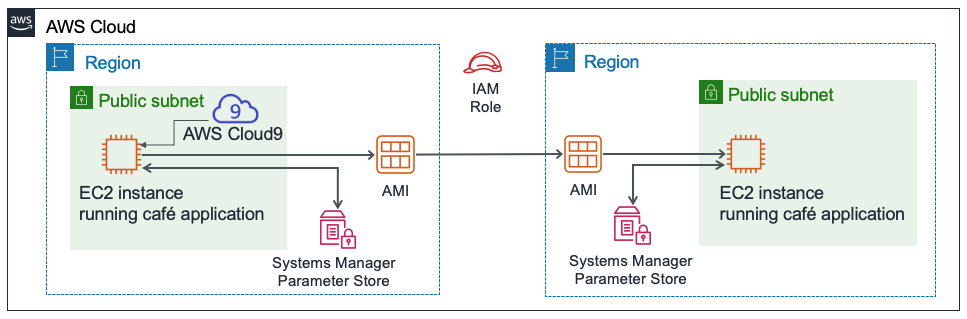
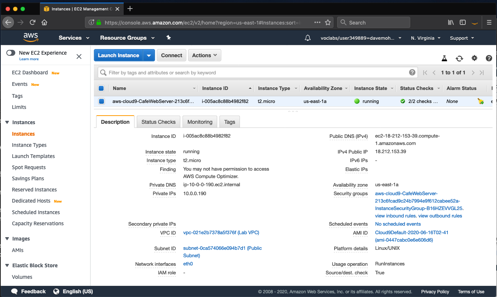
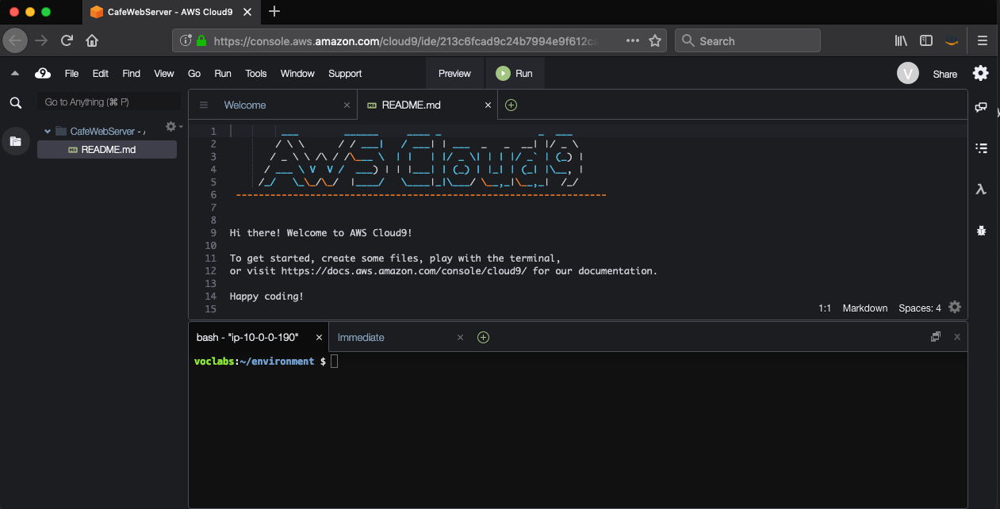
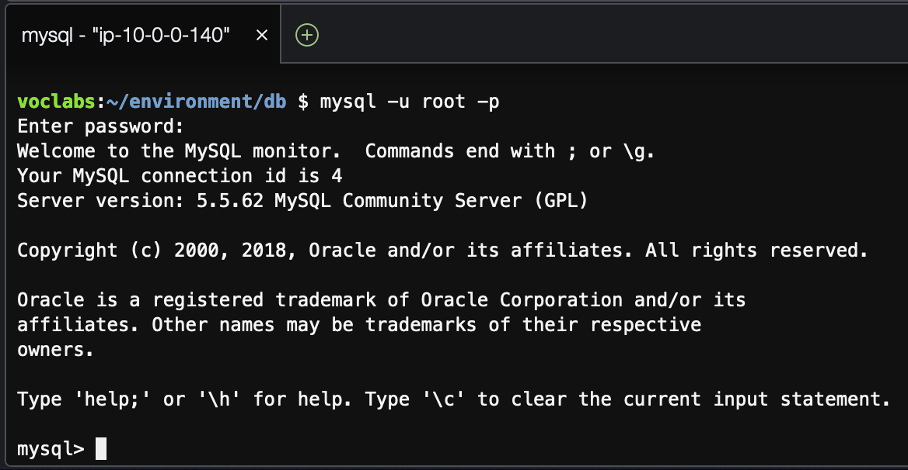
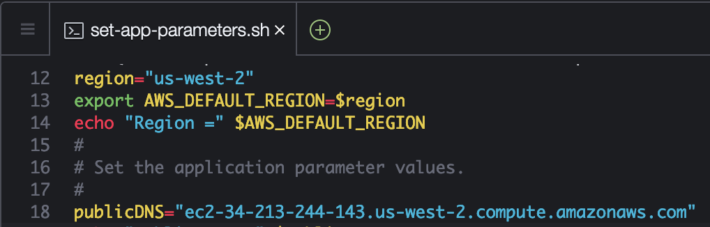

Module 4 - Challenge Lab: Creating a Dynamic Website for the Café
Scenario
After the café launched the first version of their website, customers told the café staff how nice the website looks. However, in addition to the praise, customers often asked whether they could place online orders.
Sofía, Nikhil, Frank, and Martha discussed the situation. They agreed that their business strategy and decisions should focus on delighting their customers and providing them with the best possible café experience.
Lab overview and objectives
In this lab, you will deploy an application on an Amazon Elastic Compute Cloud (Amazon EC2) instance. The application enables the café to accept online orders. After testing that the application works as intended in the first AWS Region (the development environment), you will then create an Amazon Machine Image (AMI) from the EC2 instance. You will also deploy a second instance of the same application as the production environment in another AWS Region.
After completing this lab, you should be able to:
- Connect to the AWS Cloud9 IDE on an existing EC2 instance
- Analyze the EC2 instance environment and confirm web server accessibility
- Install a web application on an EC2 instance that also uses AWS Systems Manager Parameter Store
- Test the web application
- Create an AMI
- Deploy a second copy of the web application to another AWS Region
When you start the lab, some resources are already created for you in the AWS account:

At the end of this lab, your architecture should look like the following example:

Duration
This lab will require approximately 60 minutes to complete.
AWS service restrictions
In this lab environment, access to AWS services and service actions might be restricted to the ones that are needed to complete the lab instructions. You might encounter errors if you attempt to access other services or perform actions beyond the ones that are described in this lab.
Accessing the AWS Management Console
At the top of these instructions, choose Start Lab to launch your lab.
A Start Lab panel opens, and it displays the lab status.
Tip: If you ever need more time to complete the lab that is displayed on the timer, choose the Start Lab button again to restart the timer for the environment. Doing so will not delete resources you have created.
- Wait until you see the message Lab status: ready, then close the Start Lab panel by choosing the X.
At the top of these instructions, choose AWS.
This opens the AWS Management Console in a new browser tab. The system will automatically log you in.
Tip: If a new browser tab does not open, a banner or icon is usually at the top of your browser with the message that your browser is preventing the site from opening pop-up windows. Choose the banner or icon, and then choose Allow pop-ups.
- Arrange the AWS Management Console tab so that it displays alongside these instructions. Ideally, you will have both browser tabs open at the same time so that you can follow the lab steps more easily.
A business request for the café: Preparing an EC2 instance to host a website (Challenge #1)
The café wants to introduce online ordering for customers, and enable café staff to view submitted orders. Their current website architecture, where the website is hosted on Amazon S3, does not support the new business requirements.
In the first part of this lab, you will take on the role of Sofía. You will configure an Amazon EC2 instance so that it is ready to host a website for the café.
Task 1: Analyzing the existing EC2 instance
In this task, you will note details about an existing EC2 instance that was created for you in the AWS account.
From the Services menu, choose EC2, then choose Running instances.
Notice the running instance named aws-cloud9-CafeWebServer-.... This EC2 instance was created when you started the lab.

Answering questions about the instance
Answers will be evaluated when you choose the blue Submit button at the end of the lab.
Access the questions in this lab.
- Choose the Details menu, and choose Show.
- Choose the Access the multiple choice questions link that appears at the bottom of the page.
In the page that you loaded, answer the first four questions:
- Question 1: Is the instance in a public subnet?
- Question 2: Does the EC2 instance have an IPv4 public IP address assigned to it?
- Question 3: What inbound TCP port numbers are open for this instance?
- Question 4: Does the EC2 instance have an AWS Identity and Access Management (IAM) role associated with it?
Note: Leave the questions webpage open in your browser tab. You will return to it later in this lab.
Task 2: Connecting to the IDE on the EC2 instance
AWS Cloud9 is service that can run on an EC2 instance. It provides an integrated development environment (IDE) that includes features such as a code editor, debugger, and terminal.
By using the AWS Cloud9 environment, you don't need to download a key pair and connect to the EC2 instance by using PuTTY or similar Secure Shell (SSH) software. By using AWS Cloud9, you also don't need to use command line text-editing tools (like vi or nano) to edit files on the Linux instance.
From the Services menu, choose AWS Cloud9, then choose Your environments.
Notice the CafeWebServer environment. It indicates that it is of enter EC2.
Choose Open IDE.
You are now connected to the AWS Cloud9 IDE that is running on the EC2 instance that you observed earlier.
The IDE includes:
- A Bash terminal in the bottom-right panel.
- A file browser in the left panel that shows files in the
/home/ec2-user/environmentdirectory on the instance. - A file editor in the upper-right panel. If you double-click a file in the file browser—such as the README.md file—it will display in the editor.

Task 3: Analyzing the LAMP stack environment and confirming that the web server is accessible
Recall that the objective of this challenge lab is configure an EC2 instance to host the new dynamic website for the café. In this task, you will analyze what is already installed.
Observe the OS version.
In the AWS Cloud9 bash terminal, run this command:
cat /proc/versionNotice how the output indicates it is an Amazon Linux instance, roughly analogous to Red Hat 7.
Observe the web server, database, and PHP details and server state.
In the terminal, run these commands:
xsudo httpd -vservice httpd statusmysql --versionservice mysqld statusphp --versionThe output should show the versions of the web server and the database, and also show that they are not currently running.
Start the web server and the database, and also set them to start automatically after any future EC2 instance restart.
In the terminal, run these commands:
xxxxxxxxxxsudo chkconfig httpd onsudo service httpd startsudo service httpd statussudo chkconfig mysqld onsudo service mysqld startsudo service mysqld status
Configure the EC2 instance so that you can use the AWS Cloud9 editor to edit web server files.
Notice that the AWS Cloud9 file browser currently does not display the Apache web server default web directory.
In the terminal, run these two commands:
xxxxxxxxxxln -s /var/www/ /home/ec2-user/environmentsudo chown ec2-user:ec2-user /var/www/htmlThe first command you ran created a symlink from the default AWS Cloud9 editor workspace to the
/var/wwwdirectory that contains your web server files.The second command changed ownership of the html subdirectory so that the ec2-user (which you are logged in as) can edit and create new files in it.
Creating a simple test webpage.
In the file browser, expand the CafeWebServer > www directory, and highlight the html directory.
Choose File > New File.
In the text editor tab, paste the following line:
xxxxxxxxxx<html>Hello from the café web server!</html>Choose File > Save, and save the file in the html directory as index.html.
Make the website accessible from the internet.
In this step, you will need to verify and update the configurations that make the webpages (which are hosted on the web server) accessible from the internet.
Here are some tips to help you get started:
Tip #1 (click to expand)
Discover the IPv4 public IP address of the EC2 instance, and try to load `http://<public-ip>` in a new browser tab. Does the message that you entered into index.html load in the browser?
Tip #2 (click to expand)
To allow inbound HTTP traffic on TCP port 80 from anywhere, update the security group of the EC2 instance, as needed.
New business requirement: Installing a dynamic website application on the EC2 instance (Challenge #2)
In the previous challenge, you configured the EC2 instance. You now know that PHP is installed, and that the application environment has a running relational database. Also, the environment has a running web server that can be accessed from the internet. You now have the basic setup for hosting a dynamic website for the café.
In the second part of this lab, you will take on the role of Sofía, and install the café application on the EC2 instance.
Task 4: Installing the café application
Download and extract the web server application files.
In the Bash terminal, run these commands:
xxxxxxxxxxcd ~/environmentwget https://aws-tc-largeobjects.s3-us-west-2.amazonaws.com/ILT-TF-200-ACACAD-20-EN/mod4-challenge/setup.tar.gztar -zxvf setup.tar.gzwget https://aws-tc-largeobjects.s3-us-west-2.amazonaws.com/ILT-TF-200-ACACAD-20-EN/mod4-challenge/db.tar.gztar -zxvf db.tar.gzwget https://aws-tc-largeobjects.s3-us-west-2.amazonaws.com/ILT-TF-200-ACACAD-20-EN/mod4-challenge/cafe.tar.gztar -zxvf cafe.tar.gzNotice how the file browser now shows the three .tar.gz files that you downloaded.
You also extracted these archive files, which created the
cafe,db, andsetupdirectories in your work environment.
Copy the café files over to the web server document root.
In the Bash terminal, run this command:
xxxxxxxxxxmv cafe /var/www/html/
Observe how the application is designed to work.
- Open the
html/cafe/index.phpsource code in the AWS Cloud9 editor by double-clicking it. - Notice that this file has HTML code in it, but it also contains sections that are enclosed in elements. These elements make calls to other systems and resources.
- For example, on line 18, you see that the PHP code references a file named getAppParameters.php.
- Open the getAppParameters.php file in the code editor.
- Notice on line 3 of this file that the AWSSDK is invoked.
- Also, on lines 10–33, the web application creates a client that connects to the ssm service, which is AWS Systems Manager. The application then retrieves seven parameters from Systems Manager. Those parameters have not been created in AWS Systems Manager yet, but you will do that next.
- Open the
In the AWS Systems Manager Parameter Store, configure the application parameters.
In the Bash terminal, run these commands:
xxxxxxxxxxcd setup./set-app-parameters.shThe shell script that you just ran issued AWS Command Line Interface (AWS CLI) commands. These commands added the parameters that the application will use to the Parameter Store.
- In the AWS Management Console, from the Services menu, choose Systems Manager.
From the panel on the left, choose Parameter Store.
Notice how there are now seven parameters stored here.
The café application's PHP code references these values (for example, so that it can retrieve the connection information for the MySQL database).
Choose the
/cafe/dbPasswordparameter, and copy the Value to your clipboard. You will use this value in a moment.
Configure the MySQL database to support the café application.
Back in the AWS Cloud9 bash terminal, run the following commands:
xxxxxxxxxxcd ../db/./set-root-password.sh./create-db.sh
Observe the database tables that were created.
In the Bash terminal, run this command to connect the terminal-based MySQL client to the database:
xxxxxxxxxxmysql -u root -pWhen you are prompted for the database password, paste the dbPassword parameter value that you copied.
You should now see a
mysql>prompt, which indicates that you are now connected to the MySQL database that runs on this EC2 instance.

To observe the contents of the database (specifically, the tables that support the café web application), enter the following commands:
xxxxxxxxxxshow databases;use cafe_db;show tables;select * from product;exit;
Update the timezone configuration in PHP.
In the Bash terminal, run the following commands:
xxxxxxxxxxsudo sed -i "2i date.timezone = \"America/New_York\" " /etc/php.inisudo service httpd restartThe first command that you ran configured the time zone in the PHP software.
The second command that you ran restarted the web server so that the web server notices the configuration update.
Test whether the café website is working and can be accessed from the internet.
In a new browser tab, try to load the application at
http://<public-ip>/cafewhere <public-ip> is the IPv4 public IP address of the EC2 instance.You will see that only the title banner of the website loads. The rest of the webpage is not loading correctly.
Resolve an issue with the website.
In this step, you will need to figure out how to make the café website function correctly.
Here's a list of what does work:
- The test page at http://<public-ip>/ loads, so you know that the web server works, and is accessible from the internet
- You also know that the MySQL database is running, and contains tables and data to support the application
What could be the issue?
Tip #1 (click to expand)
There is nothing wrong with the PHP code as written. The issue is related to permissions.Tip #2 (click to expand)
Does the web application rely on any other services or resources in addition to the web server and the database? For example, does it require access to another AWS service?Tip #3 (click to expand)
Go to the IAM service and search for the IAM role that is named CafeRole. Observe the permissions that this role grants. Would it be helpful to have these rights granted to the EC2 instance? How could you grant these permissions to the café web application?Tip #4 (click to expand)
Select the EC2 instance in the Amazon EC2 console, and review the options on the Actions menu. Would any of the actions help solve the issue?
When you think you have fixed the issue, load the http://<public-ip>/cafe page again. Does it load completely so that you can see the café menu items? If so, congratulations!
Note: If you still can't solve the issue, you might find it helpful to run the grading script as documented in the Submitting your work section at the end of these lab instructions. The Submission Report that is generated can provide additional tips for parts of the lab that you didn't complete successfully. You can submit your work as many times as you like—only the score that you achieve on the last submission will be retained.
Task 5: Testing the web application
Test by placing an order.
In the browser tab where you have the
http://<public-ip>/cafepage open, choose Menu.Submit an order for at least one of the menu items displayed.
- Note: you may need to scroll down to find the Submit Order button.
Return to the menu page and place another order, then go to the Order History page to see the order details for all the orders that you placed.
New business requirement: Creating development and production websites in different AWS Regions (Challenge #3)
Everyone at the café is impressed with the new dynamic website that Sofía created! Customers are delighted that they can now place online orders and schedule dessert items for pickup. Customer satisfaction has increased because of the reduced customer wait times.
However, another business requirement emerges, along with the praise. Martha and Frank would like to have two café websites:
- One website that can be used as a development environment to mock up new features and web designs before they are released to customers
- A separate website that will host the production environment that customers use
Sofía discussed the new requirement with Mateo when he came into the café one morning for his coffee. He suggested that, ideally, the two environments would exist in different AWS Regions. Such a design would have the added benefit of providing more robust disaster recovery (DR) in the unlikely scenario when an AWS Region becomes temporarily unavailable.
Sofía is now very busy! As she accomplishes more impressive work, her skills become more in-demand.
Task 6: Creating an AMI and launching another EC2 instance
Because the café website already runs well on an existing EC2 instance, Sofía decides to duplicate it by creating an AMI from it. She will then launch a new instance from the new AMI.
You will continue to take on the role of Sofía for this task. Before you create an AMI out of this instance, you should create a new key pair, which might be important to have later in this lab.
Set a static internal hostname and create a new key pair on the EC2 instance.
In the bash terminal, run the following commands:
xxxxxxxxxxsudo hostname cafeserverssh-keygen -t rsa -f ~/.ssh/id_rsaFor the two times that you are prompted for a passphrase, press the ENTER key.
To make the new key available to the SSH utilities, in the Bash terminal, run the following command:
xxxxxxxxxxcat ~/.ssh/id_rsa.pub >> ~/.ssh/authorized_keys
- In the AWS Management Console, browse to the EC2 service area and select the instance.
Choose Actions > Images and templates > Create Image.
Tip: Leave the Create Image dialog open in the browser tab while you answer some questions about AMIs.
Answering questions about AMIs
Answers will be recorded when you choose the blue Submit button at the end of the lab.
Return to the browser tab that has the questions for this lab. You accessed this tab earlier.
If you need to find the page again:
- Choose the Details menu, and choose Show.
- Choose the Access the multiple choice questions link that appears at the bottom of the page.
In the page, submit answers to the following questions:
- Question 5: When you create an AMI from an instance, will the instance be rebooted?
- Question 6: In what ways can you modify the root volume properties when you create an AMI from an instance?
- Question 7: Can you add more volumes to an AMI that you create from an instance that only has one volume?
Back in the AWS Management Console, in the Create Image screen, create the new AMI:
- Image name:
CafeServer - Choose Create Image
- Image name:
From the navigation menu, choose AMIs and wait until the image status becomes Available. The process typically takes about 2 minutes. You may need to expand Images to find AMIs.
Create an AMI in another AWS Region
In this step, your objective is to create a new EC2 instance from the AMI that you just captured. However, you must create the new instance in the Oregon (us-west-2) AWS Region.
Tip #1 (click to expand)
Copy the AMI ID of the image that you just created. Then, try to find it in the us-west-2 Region.Tip #2 (click to expand)
Do AMIs exist at the account level?Tip #3 (click to expand)
Select the AMI you that you created in the AWS Region where you created it. Next, choose the Actions menu. Do any actions seem like they could help you make the AMI available in the US West (Oregon) Region? Go ahead and choose the appropriate action. After you initiate it, the action might take up to 5 minutes to complete. Choose the refresh icon occasionally to know more quickly when it has completed.
Create the new café instance from your AMI. The new instance that you create must match the following criteria.
Region:
OregonInstance Size:
t2.smallNetwork:
Lab VPC Region 2,Public SubnetIAM Role:
CafeRoleTag:
- Key:
Name - Value:
ProdCafeServer
- Key:
Security Group:
- Create a new one named cafeSG, with TCP port 22 open to anywhere
- Set TCP port 80 so that it's open to anywhere as well
Proceed without a key pair (the key pair that you created earlier in this lab should work to connect to it, if necessary)
- Wait for the new instance to have a Public DNS value assigned to it, even if the status of the instance is still not Available.
- Copy the Public DNS value. You will use it soon.
To create the needed AWS Systems Manager parameters in the new AWS Region, complete these steps.
Return to the AWS Cloud9 IDE in the N. Virginia (us-east-1) Region.
Open the CafeWebServer/setup/set-app-parameters.sh file in the text editor.
Edit line 12 of the file to match this setting:
xxxxxxxxxxregion="us-west-2"Edit line 18 to match this setting (where <public-dns-of-ProdCafeServer-instance> is the actual DNS of the ProdCafeServer instance):
xxxxxxxxxxpublicDNS="<public-dns-of-ProdCafeServer-instance>"
Note: The line should still contain the quotation marks, but it should not contain the angle brackets (< >).
xxxxxxxxxxThis example shows what line 12 should look like and how line 18 should be formatted. However, the value of your public DNS will be different.

- File > Save the change.
- To run this script, go to the top of the IDE and choose the Run button.
In the Bash terminal below the text editor, you should see output that's formatted in JavaScript Object Notation (JSON). This output indicates that the parameters script ran successfully.
If the script encountered an issue, click here to view troubleshooting tips.
If the output of the command indicates that the credentials are expired, try running these commands in the Bash terminal (and then run the set-app-parameters.sh again):wget https://aws-tc-largeobjects.s3-us-west-2.amazonaws.com/ILT-TF-200-ACACAD-20-EN/mod4-challenge/cred-update.shchmod +x cred-update.sh./cred-update.sh
Note: By changing the AWS Region details and running this script again, you created the same parameters that you created earlier in the us-east-1 Region of the AWS Systems Manager Parameter Store. However, this time, you created these parameters in the Oregon Region.
Task 7: Verifying the new café instance
- Return to the EC2 Console in the Oregon Region, and verify that the new ProdCafeServer instance is running.
Copy the IPv4 public IP address, and load it in a web browser.
The Hello from the cafe web server! message should display.
Load the
http://<public-ip>/cafe/URL in a browser tab.The entire café website should display.
Load the Menu page.
The full Menu page should load, and the order-placing functionality should work.
- Place an order to verify that the website is working as intended.
Troubleshooting tips (skip this one step if you didn't encounter any issues with loading the Menu page).
The grading script can provide additional tips for parts of the lab that you didn't complete successfully. You can submit your work as many times as you like—only the score that you achieve on the last submission will be retained.
Also, if you want to connect to the new EC2 instance in Oregon (us-west-2) to do some troubleshooting, run this command from the AWS Cloud9 IDE in us-east-1:
xxxxxxxxxxssh -i ~/.ssh/id_rsa ec2-user@<public-ip-of-ProdCafeServer>Note that <public-ip-of-ProdCafeServer> is the actual public IP address of the ProdCafeServer instance.
Update from the café
Sofía is now a hero at the cafe! She created a dynamic website, and she also created a duplicate version of the same website that runs in a second AWS Region.
Sofía decided to designate the first EC2 instance that she created—the one in the us-east-1 Region—as the development instance. The second instance she created—the one in Oregon (the us-west-2 Region)—will be the production instance.
This way, Sofía and any other application developers can test application enhancements on the development site without affecting the production site. Then, when the developers decide that the enhancements look good and they have fully tested them, they can migrate the code to the production site.
Sofía explained to her parents, Frank and Martha, what she had done. Though they didn't fully understand all the technical terms that Sofía used, they were pleased to know that the website can now take online orders. They were also glad to hear that they can now test new enhancements to the website without immediately exposing those changes to customers.
Submitting your work
- At the top of these instructions, Submit to record your progress and when prompted, choose Yes.
If the results don't display after a couple of minutes, return to the top of these instructions and choose Grades
Tip: You can submit your work multiple times. After you change your work, choose Submit again. Your last submission is what will be recorded for this lab.
- To find detailed feedback on your work, choose Details followed by View Submission Report.
Lab complete
Congratulations! You have completed the lab.
To confirm that you want to end the lab, at the top of this page, choose End Lab, and then choose Yes.
A panel should appear with this message: DELETE has been initiated... You may close this message box now.
- To close the panel, choose the X in the top-right corner.
©2020 Amazon Web Services, Inc. and its affiliates. All rights reserved. This work may not be reproduced or redistributed, in whole or in part, without prior written permission from Amazon Web Services, Inc. Commercial copying, lending, or selling is prohibited.